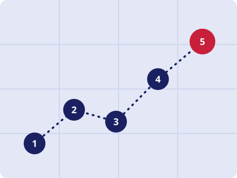

WebPenTest 101
WebPenTest 101Learn
What a penetration test is, how testers work through one, and the weaknesses that show up again and again.

What is penetration testing?
A penetration test is an authorised, simulated attack on a system. The tester looks for weaknesses the way a real attacker would, then reports them so the owner can fix them first.
Only test applications you own or have written permission to test. Testing without it is illegal.
Methodology
Planning and scope
Agree on what can be tested, when, and how. Get the permission in writing.
Reconnaissance
Collect information about the target: the technology it runs, its pages and parameters, and anything public.
Scanning and enumeration
Map the application and look for known weaknesses, using tools and manual checks together.
Exploitation
Show that a weakness is real by demonstrating its impact safely, without causing damage.
Reporting
Write up each finding: what it is, how serious it is, how to reproduce it, and how to fix it.
Common vulnerabilities
Many of these appear in the OWASP Top 10, a regularly updated list of the most critical web application risks.
Injection
The application mixes untrusted input into a query or command, so an attacker can change what it does. A search box that lets ' OR '1'='1 alter a database query is the classic SQL injection example.
Fix: use parameterised queries and validate input on the server.
Cross-site scripting (XSS)
The application shows user input on a page without encoding it, so a script can run in another visitor's browser and steal their session or change the page.
Fix: encode output for the place it appears, and add a Content Security Policy.
Broken access control
Users can reach data or actions they shouldn't. For example, changing /orders/101 to /orders/102 in the address bar shows someone else's order.
Fix: check permissions on the server for every request.
Broken authentication
Weak passwords, no lockout after repeated failures, or badly handled sessions let attackers sign in as someone else.
Fix: enforce strong passwords, add multi-factor authentication, and protect session tokens.
Security misconfiguration
Default accounts, detailed error messages, open admin pages, or missing security headers give attackers an easy way in.
Fix: remove what you don't use, harden the defaults, and review settings regularly.
Cross-site request forgery (CSRF)
A malicious site tricks a logged-in user's browser into sending an unwanted request to another site they're signed in to.
Fix: use anti-CSRF tokens and SameSite cookies.